Virtua Fighter 5 FS コスプレ：懐かしのスター 編
先日の VF5FS コスプレの三つの記事のあと、全キャラの衣装を調べるべく、とにかく全キャラに一つずつ「コスプレ」を作ってみることにした。VF5FS の「コスプレ」は、他のゲーム(後述)の「キャラクリ」と違い、自由度が少ないが、限られたコスチュームで自分が気に入るコーディネイトをした結果、何かのテーマやキャラが見えてくるのが楽しい。 今回は、そうやって「コスプレ」させたのをテーマごとに《リリアン女学園 編２》《イロモノ 編》《懐かしのスター 編》としてまとめ、紹介する。この記事は《懐かしのスター 編》で、どことなく見たことのある「コスプレ」を扱う。先の《その他 編》の続きのようなもの。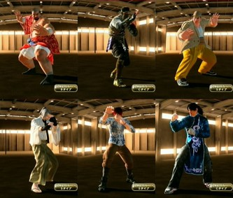
なお、この記事のリード部分は各編でも同じなので、すでに読んだ方は次の節まで読み飛ばしてくださればよい。 『Virtua Fighter 5 Final Showdown』(バーチャファイター５ファイナルショーダウン、略して VF5FS) は、元はアーケードゲームだったのが、Xbox 360 または PlayStation 3 に移植されたもので、ダウンロードで購入できる。 さらに追加コスチュームを買うことでキャラの衣装を変えられるようになる。各キャラごとにコスチュームが売っているが、複数のキャラがセットになったものが２セットあり、その２セットを変えばすべのキャラの衣装が揃う。 私は前作の『Virtua Fighter 5 Live Arena』(以下 VF5LA と略す)もダウンロード購入していたが、そちらは衣装は各キャラで攻略をしてはじめて手に入るものだった。ところが、今作 VF5FS のダウンロード版では、キャラのコスチュームセットを買えば、いきなりすべての衣装が使える。 だから、「コスプレ」目的ならば、ダウンロード購入時に一気に複数キャラのアイテムセットのその１とその２を揃えてしまえば、幸か不幸か最初に出たアイテムセット以来、新しいコスチュームの追加はないので、すべての衣装を制限なく使えることになる。(CG の動きのはげしさを避けるためらしい制限はある。)今なら全部で 3600 MSP (PS3 だと4500円)。オススメ。 (「コスプレ」のこのゲーム内での正しい呼称は「アイテムカスタマイズ」らしい。Terminal メニューから入る。) なお、『Virtua Fighter 2』が好きだったオールドファンの中には「バーチャ」が、3や 4 になってどんどん操作や概念が難しくなることに付いていけなくなった方もいるかもしれない。(私もそうだった。)でも、この 5 のシステムは、あえて操作を単純化する方向が出されているようで、ファンの多かった VF2 のグラフィックを極限まで美化した「だけ」に留めたといった感がある。ロートル格闘ゲーマーにもオススメである。 この先、コスプレデータの「レシピ」すなわち使った衣装名等も公開するが、言及のない身体部位はアイテムを使っておらず、省略した。 ■新太郎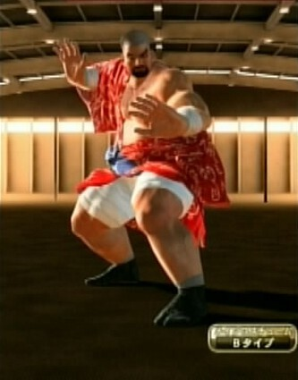
《その他 編》でデブな「現実世界のオレ」をジェフリーで作るとき、鷹嵐でもいちおう作ろうとしてみた。でも、それはぜんぜん自分っぽくならなかった。次に、鎧とかで五月人形風にしようかと思ったが、兜をかぶらせた姿を子供っぽく見せることができず、断念した。 五月人形が無理だったところから、似た感じでレトロ調に…と思って作っていくと、こうなった。作るときは、江戸庶民風(というか江戸任侠風かな)の衣装ぐらいのつもりだったが、なんとなく、どこかで見たキャラになっていた。 映画『無法松の一生』とか、江戸というよりはその時代の風俗の残る地方の明治か大正の漢の感じ。でも、あのころはこんな「デブ」が街にいないはずなのに、どうして私にはそう見えるのかは、謎だ。 名は、同じくここまでのデブでないが、私が何となく似ていると思う勝 新太郎にあやかって「新太郎」と名付けた。でも、私は世代的に勝 新太郎の映画等はあまり見てない。むしろ中村玉緒の話の中などバラエティー番組の新太郎伝説的なもので知った面が大きい。 名前: Shintarou 素体: タカアラシ Bタイプ 髪、帽子: シルバー角刈り 鼻、口: 無精ヒゲ 手: 白いバンテージ 上半身(後): 木綿地の赤浴衣 肌: 日焼け ベルト: 青浴衣帯 パンツ: 白股引 足: 黒足袋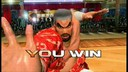
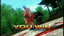
■清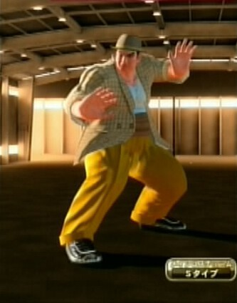
作れというのをそのまま作った感じ。VF5FS のコスチュームタイプの中には、いかにもなコスチュームがあって、ほとんど知ってる人にとってはそう作るしかない組み合わせみたいなのが露骨にある。そういうのには少し反発しながら、私は作ってきたのだが、これは、まぁ、降参かな。こう作るしかなかった。 名はおわかりだろう。『男はつらいよ』寅さん役の渥美 清にあやかった。下のサラを抱いてるような写真は、落ちそうなのを助けようとして誤解されて…みたいな寅さんの黄金パターンを想定している。 でも、「寅さん」は上の勝新と違って「デブ」のほうがさきに立ち、鷹嵐が彼自身がファンでそのコスプレをしているという以上には見えない。だから、あえて、寅さんが確か<ruby><rb>履</rb><rt>は</rt></ruby>かないといった「エナメルの靴」を履かせてみた。ただし、コスチュームにある「エナメルの靴」よりも、ブーツをはかせてそれをズボンで隠したほうが、それっぽく見えるのでそうした。 名前: Kiyoshi 素体: タカアラシ Sタイプ 髪、帽子: 茶色中折れ帽 アウター: レトロ調ジャケット ベルト: 腹巻 パンツ: イエローフォーマルスラックス 足: ワイルドレスラーブーツ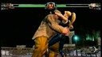
■真一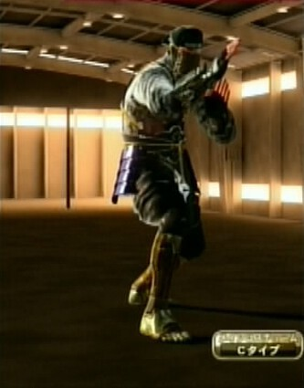
御存知『影の軍団』。って、忍者が知られていてどうする！…というのは番組の CM をネタにした誰かの漫才のネタだったか…。 『影の軍団』は、お子様にはまだ早いセクシー路線＆少し遅い時間帯で、観ることはできなかったが、記憶には残っている。(^^;)…なぜか、私は『必殺』シリーズの後と覚えてたが、『必殺』と同じ時間帯だったらしい。『ザ・ハングマン』がちょうど前の時間帯。 『影の軍団』の主役を演じていた千葉 真一にあやかって、名を真一とした。ただ、このローマ字表記がやっかいだね。「ン」のあとにア行が続くので、ローマ字変換表によっていろいろあるが「Sinnichi」とかすると、英語では「シンニチ」みたいに読まれるかもしれず、かといって、今回みたいにハイフンでつないだりすると、ichi がミドルネームか二重のファミリーネームとかにでも間違われないか心配になる。だから千葉 真一も海外進出するときはサニー千葉と名のったのだろう。 このあたり [cocolog:74412954] で Transliteration by ASCII と称して考えているところだと、普通、「ン」のあとに「ー」は来ないから、特に sloppy な場合は、「k:shin-ichi」は、「シンイチ」と transliteration (逐字訳) したいね。 名前: Shin-ichi 素体: カゲ Cタイプ 髪、帽子: 黒月光頭巾 メガネ: 白い鍔眼帯 鼻、口: 傷なしフェイス 顔面: 雷文柄付き抹茶色月光覆面 手: 暗器篭手 首: 灰色隠れ戦闘首輪 インナー: 月光帷子 アウター: 黒迷彩月光忍装束 肌: 日焼け パンツ: 黒甲冑パンツ 足: カッパーニンジャブーツ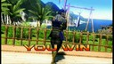
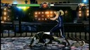
■稲葉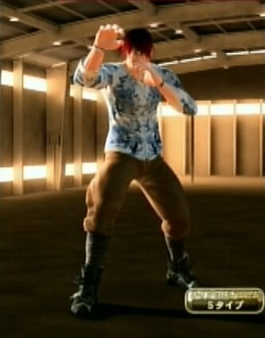
ゴウは、ロック系というかメタル系の衣装が用意されていて、これはそれ系の普段着といった感じなのだと思う。そういうイメージに素直に沿っていった。 普段着姿ということで髪型をこうして、軽く変装用っぽいメガネを付けさせると、私には B'z の稲葉 浩志に見えたので、こう名付けた。 私にとっては長い間、B'z は、『シティーハンター』の ED を歌っていた TM NETWORK の亜流という印象でしかなかったが、でも、TMN が消えてからも、むしろ、目覚ましい活躍を「今も」続けている。だから、「懐かし」ではないかな…と思ったが、B'z のデビューは 1988 年、2013 年でもう 25 年前なんだぜ！ビックリだよな。 名前: Inaba 素体: ゴウ Sタイプ 髪、帽子: レッドナチュラルヘアー メガネ: ハニカムサングラス 手首: シルバーブレスレット 首: ゴールドネックレス アウター: 白地の青柄長袖シャツ 肌: 血色良好肌 ベルト: ベルト外し(Sタイプ) パンツ: 「J6」の茶軍隊パンツ 足: 黒いハイカットレザーブーツ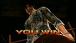
■時代劇コントに出てくる剣豪の「先生」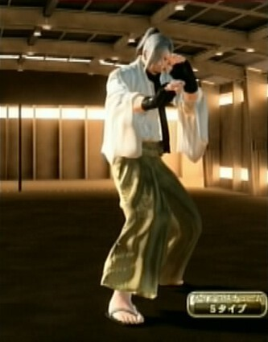
「先生、お願いします」というアレ。ドリフやチャンバラトリオの時代劇コントや、もっと古くは浪曲『天保水滸伝』の平手<ruby><rb>造酒</rb><rt>みき</rt></ruby>とか。雇われ剣豪で、損な役回りで出てくるヤツ。コントでは、自分がいやだと言えないところに、おもしろい対応が出てくる。 これも上の清と同じ「作れというのをそのまま作った感じ」だが、現代なら『るろうに剣心』あたりを参考にしそうなところを反発して、こうなった。ただ、ジャンが元は白髪なので、デフォルトの武士風髪型の病弱イメージに順った面もある。 名前: Sensei 素体: ジャン Sタイプ 髪、帽子: プリンスポニーテール 鼻、口: 無精ヒゲ 手: ブラックリストグローブ 首: ブラックロングスカーフ アウター: 白い剣豪長着 ベルト: デザートバイオウェストパーツ 足: 黒い剣士風草履 スネ: 薄茶色の剣豪袴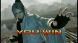
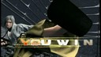
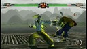
■大人になった拳児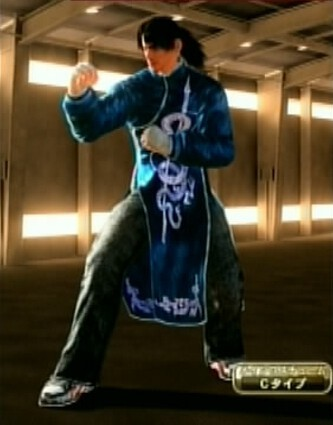
生身の人生に、悟りのときは一瞬で過ぎるもの。少年刑務所を出て成人し、ピザ屋でバイトする拳児。ピザ屋の同僚の妹(中国人留学生)が、中華マフィアに捕まったと聞き、かつて封印した八極拳、悩んだ末に、その道着を取り出し港の倉庫に向かう。そこで拳児を待っていたのは、なんと！…。とかいう同人誌的続編ストーリーを妄想。そういったイメージで固めたのがこの「コスプレ」。 この記事を書くにあたり、『拳児』全巻を「中古で大人買い」というのも変だが、手に入れて読んだ。ネタバレになるが、ラストは微妙な感じで、私は夜叉王の一人が拳児のお爺さんなのではないかと疑っていたが、お爺さんは変な感じに上で待ってるだけだった。 このマンガが「実」とすれば虚実の「虚」の一つとして私が考えたラストは次のようなもの。… 夜叉王を率いていた悟空が死んで、どうもお爺さんの侠太郎が悟空なのではないかと疑いを抱きつつ、拳児が山頂の院まで致ると、面を付けた八極拳使いと対峙することになる。拳児はコブシを交えるうちに、「悟空」は夜叉王達と少し違う心意把を使っていることに気付く。「心意六合拳」！闘いの中、技を会得した拳児は、「悟空」以上の震脚で心意把を離つ。「悟空」には実は<ruby><rb>功夫</rb><rt>くんふう</rt></ruby>が足りていないことを悟った拳児が、「闘い」の終りを告げると、「悟空」は洪家拳の構えを見せる。 拳児の八極拳の頂が「悟空」の胸を突き、崖下に転落せんとするそのとき、「悟空」は流星錘を拳児の足にからませた。二人は崖の下に落ちる。面を外したその姿は、やはり、トニー・譚だった。トニーは侠太郎が二代目の悟空であり、すでに亡く、トニーが三代目を継いだことを述べる。 トニーは盗んだ心意六合拳の技を完成させるため「悟空」に近づいたものの、夜叉王達に負けた。そのとき彼の命を救ったのが侠太郎だった。 夜叉王達が人を襲わずとも自立できるように、農業や日本との商業を成り立たせるため、侠太郎は二代目「悟空」となって残っていたのだ。 だが、やがて侠太郎が病に侵される。そこにトニーが現れたのだ。侠太郎はこれも天意として彼を後継者として育て、トニーはそこで改心した。侠太郎が数ヶ月前に死んだとき(拳児が中国にやってきたときはまだ生きてた！)、トニーはあとを継いだが、いかんせん若過ぎ、夜叉王達が人を襲う方向に戻るのを止められなかった。 トニーはいう。「この世界の拳を守れるのは俺ではなくお前だ。拳児。」だが、拳児はトドメの一撃を離つ。「今ここで、トニー・譚が剛侠太郎を殺した。トニー・譚は最強の拳士にして夜叉王を統べるもの。」 拳児は帰国した。「お爺さんは死んだ」とだけ語り寡黙な彼。酒宴で晶の父の風間にいう。「お爺さんは悟空に殺されていました。私は負けて帰って来ました。」じっと顏を見る風間。「私は仇を討つために、再び、いや何度でも中国に行かねばなりません。」拳児はふしぎとすがすがしい顔をしていた。 …とかいった感じ。 で、大人になった拳児の物語では、「死んだはずだよ、お爺ちゃん」と闘うことになったりして。実は少林寺秘伝の術で蘇えり、眠ったまま台湾に運ばれて、そこで一年後に目覚めたとかなんとか言って。さらに記憶を失っていて、自分は、『西遊記』の悟空のキョンシーだと思い込んでいる…突如(裏の)拳法界に現れ、世界の頂点に立った…とか。(^^) おお、何かいい感じ。さらに続けると…。拳児が八極拳をやめていたのは、かつて、秘孔を突かれて３分しか闘えなくなっていたため。やがて、何かのキッカケでお爺さんの替わりに「悟空」として闘わねばならなったとき、その面が秘孔を無効化することに気付く。だが、それは大事な記憶を失わせるものでもあった。…とか。なんか、成年誌向けのつもりが少年誌みたいなノリ(『ジョジョ』？)になっちゃったな…。 名前: Kenji 素体: アキラ Cタイプ 髪、帽子: ひっつめヘアー 耳: シルバーボールピアス 手: 白いハンドバンテージ アウター: ブルーカンフードレス ベルト: パープルカンフーベルト パンツ: ブラックジーンズ 足: ブラックスニーカー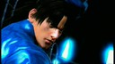
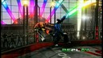
■配布物 なお、これらの「コスプレ レシピ」と画面写真をまとめたものを zip化して同人的公開物として SugarSync に置いてあります。 JRF_VF5FS_Cosplay.zip。 VF5FS は、SEGA の 2012年発売の著作物です。私自身は「レシピ」を同人で売れたりしたらいいのになぁ…即売会とかのお祭りにゲーム機とディスプレイを持ちこんで遊べないかなぁ…とか夢想しています。ただ、需要もそれほどないでしょうし、とりあえず公開したほうが愛着を持ってもらえるかと考え、無料で公開しています。ネットで公開した以上、SEGA がどういうかはわかりませんが、基本的に私としては自由に使っていただいてかまいません。 とはいえ、同人活動への色気は残しておきたいので、ダウンロード数がカウントできる SugarSync に置いています。そこに別サイトからリンクするのはいつでもこちらがリンクを切れるのでいいのですが、別サイトにアーカイブを置いての配布は、私か SEGA がいいと言わない限りやめていただくようお願いします。(私の公開自体が同人誌な勝手な公開ですので、SEGA の明示の許諾さえあれば、私は文句をいいません。) ■関連 ●VF5FS コスプレシリーズ(《リリアン女学園 編》、《七曜 編》、《その他 編》、《リリアン女学園 編２》、《イロモノ 編》、《懐かしのスター 編》)。この記事は《その他 編》の続きみたいなものである。 ●『ソウルキャリバー４』。最初で「他のゲームのキャラクリ」というのはこのゲームのキャラクタークリエイションのこと。このブログで以前、作ったキャラを紹介している。(《バビル二世編》、《懐かしキャラ編１》、《懐かしキャラ編２》) 更新：2012-12-15,2012-12-21 初公開：2012年12月21日 21:17:37 最新版：2012年12月22日 15:44:45 Comments: [E:pocketbell] 更新：修正 ［ Old ］→［「懐かし」］。 ほか、誤字訂正。 投稿: JRF | 2012-12-22 12:39:06 (JST) [E:banana] 更新：修正 「15 年以上前」→「25 年前」。 ほんとビックリだよな。私も老[ふ]けるわけだよ。でも、老けても引き算ぐらい間違えないようにしないとな。>> オレ。orz あと、少しリンクを足した。 投稿: JRF | 2012-12-22 15:48:18 (JST)
Links: リリアン女学園 編２: http://jrf.cocolog-nifty.com/column/2012/12/post-3.html イロモノ 編: http://jrf.cocolog-nifty.com/column/2012/12/post-4.html 懐かしのスター 編: http://jrf.cocolog-nifty.com/column/2012/12/post-5.html その他 編: http://jrf.cocolog-nifty.com/column/2012/12/post-2.html Virtua Fighter 5 Final Showdown: http://amcvt.sega.jp/vf5fs/ (hbm) Virtua Fighter 5 Live Arena: http://virtuafighter5.jp/xbox360/ (hbm) Virtua Fighter 2: http://amcvt.sega.jp/model2/vf2.html (hbm) 無法松の一生: http://ja.wikipedia.org/wiki/%E7%84%A1%E6%B3%95%E6%9D%BE%E3%81%AE%E4%B8%80%E7%94%9F (hbm) 勝 新太郎: http://www.google.co.jp/url?sa=t&rct=j&q=&esrc=s&source=web&cd=1&ved=0CDgQFjAA&url=http%3A%2F%2Fja.wikipedia.org%2Fwiki%2F%25E5%258B%259D%25E6%2596%25B0%25E5%25A4%25AA%25E9%2583%258E&ei=Y7nTUM_fL8uWiQf8m4DAAw&usg=AFQjCNF1SH-cK2uq3v9DyyAmfMeE33NJNQ&sig2=m7rVOiquynS666b8WpR2mA&bvm=bv.1355534169,d.aGc 男はつらいよ: http://ja.wikipedia.org/wiki/%E7%94%B7%E3%81%AF%E3%81%A4%E3%82%89%E3%81%84%E3%82%88 (hbm) 影の軍団: http://ja.wikipedia.org/wiki/%E6%9C%8D%E9%83%A8%E5%8D%8A%E8%94%B5_%E5%BD%B1%E3%81%AE%E8%BB%8D%E5%9B%A3 (hbm) 必殺: http://ja.wikipedia.org/wiki/%E5%BF%85%E6%AE%BA%E3%82%B7%E3%83%AA%E3%83%BC%E3%82%BA (hbm) ザ・ハングマン: http://ja.wikipedia.org/wiki/%E3%82%B6%E3%83%BB%E3%83%8F%E3%83%B3%E3%82%B0%E3%83%9E%E3%83%B3 (hbm) 稲葉 浩志: http://ja.wikipedia.org/wiki/%E7%A8%B2%E8%91%89%E6%B5%A9%E5%BF%97 (hbm) シティーハンター: http://ja.wikipedia.org/wiki/%E3%82%B7%E3%83%86%E3%82%A3%E3%83%BC%E3%83%8F%E3%83%B3%E3%82%BF%E3%83%BC (hbm) 天保水滸伝: http://ja.wikipedia.org/wiki/%E5%B9%B3%E6%89%8B%E9%80%A0%E9%85%92 (hbm) るろうに剣心: http://ja.wikipedia.org/wiki/%E3%82%8B%E3%82%8D%E3%81%86%E3%81%AB%E5%89%A3%E5%BF%83_-%E6%98%8E%E6%B2%BB%E5%89%A3%E5%AE%A2%E6%B5%AA%E6%BC%AB%E8%AD%9A- (hbm) 拳児: http://ja.wikipedia.org/wiki/%E6%8B%B3%E5%85%90 (hbm) 西遊記: http://ja.wikipedia.org/wiki/%E8%A5%BF%E9%81%8A%E8%A8%98 (hbm) ジョジョ: http://ja.wikipedia.org/wiki/%E3%82%B8%E3%83%A7%E3%82%B8%E3%83%A7%E3%81%AE%E5%A5%87%E5%A6%99%E3%81%AA%E5%86%92%E9%99%BA (hbm) JRF_VF5FS_Cosplay.zip: https://www.sugarsync.com/pf/D252372_79_8912523711 リリアン女学園 編: http://jrf.cocolog-nifty.com/column/2012/12/post.html 七曜 編: http://jrf.cocolog-nifty.com/column/2012/12/post-1.html ソウルキャリバー４: http://www.soularchive.jp/SC4/ (hbm) バビル二世編: http://jrf.cocolog-nifty.com/column/2010/10/post-1.html 懐かしキャラ編１: http://jrf.cocolog-nifty.com/column/2010/11/post-1.html 懐かしキャラ編２: http://jrf.cocolog-nifty.com/column/2010/11/post.html